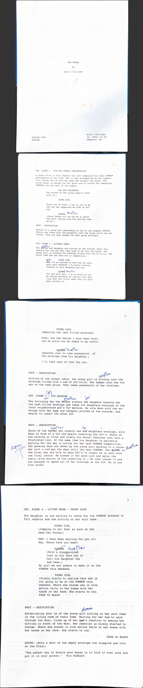

Cha Ching is a short film I produced and co-directed for the Dreamspeakers International Indigenous Film Festival, one of Canada’s longest-running Indigenous film festivals celebrating Indigenous cinema worldwide.
I served as Executive Producer and led a small crew through concept, production, and post-production. The film was inspired by an experience at the Saddle Lake Powwow where I observed a contrast between celebration and gambling activity — a moment I felt deserved a deeper, visual exploration. I served as Executive Producer and led a small crew through concept, production, and post-production. The film was inspired by an experience at the Saddle Lake Powwow where I observed a contrast between celebration and gambling activity — a moment I felt deserved a deeper, visual exploration.
Cha Ching — Short Film (2009) Festival: Dreamspeakers International Indigenous Film Festival (DIIFF) Organization: Dreamspeakers Festival Society Role: Executive Producer Medium: Short Film / PSA Focus: Social commentary, community awareness, addiction
Overview Cha Ching is a short film I created for the 2009 Dreamspeakers International Indigenous Film Festival (DIIFF), produced by the Dreamspeakers Festival Society — a non-profit organization dedicated to celebrating Indigenous storytelling in film, video, radio, and new media since 1993. The film was developed as a public service announcement exploring the impact of gambling addiction within Indigenous communities.
Inspiration The concept emerged after attending the Saddle Lake Powwow in Alberta. While witnessing youth proudly dancing in their regalia at the main arbor, I also observed a separate tent filled with poker tables and high-stakes gambling. The contrast between cultural celebration and financial risk struck me deeply. I began reflecting on how gambling addiction affects families and communities — even within spaces meant to celebrate identity and strength. That moment became the foundation for the film.
My Role As Executive Producer, I: Developed the concept and original script Assembled and led a small production team Coordinated camera, sound, and editing crew Oversaw creative direction and production decisions Guided the film from concept through completion This was one of my earliest experiences leading a production from vision to execution. Production Approach PSA-style storytelling focused on impact rather than spectacle Lean crew and limited resources Emphasis on message clarity and emotional resonance Independent production built around a clear social purpose.
Impact & Growth This project marked an important developmental period in my creative journey. It required me to: Lead a team Translate a social issue into visual storytelling Manage production logistics Take responsibility for creative direction It strengthened my ability to move from observation to execution — a skill I continue to use in design, branding, and community work today.
Reflection Cha Ching was about telling a side of the story that often goes unspoken. It reinforced for me that storytelling carries responsibility — especially when addressing complex issues within our own communities. The film represents an early commitment to thoughtful, community-rooted storytelling.
Short Card Version Cha Ching (2009) Executive Producer of a PSA-style short film exploring gambling addiction within Indigenous communities. Created for Dreamspeakers International Indigenous Film Festival.

Watch the Video